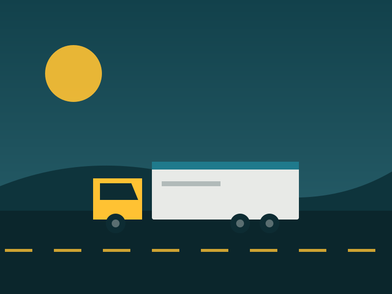
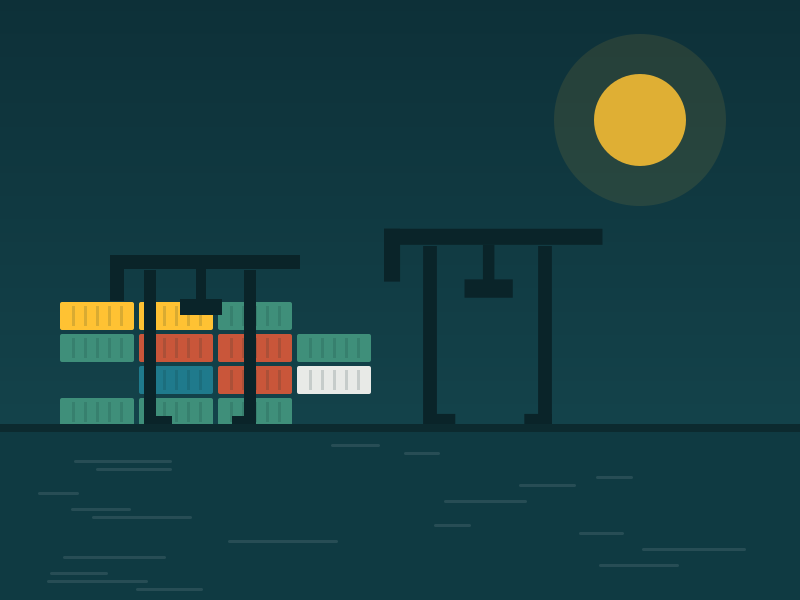
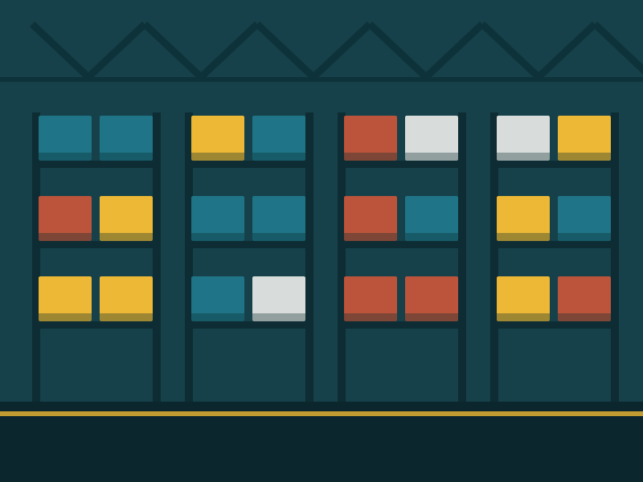
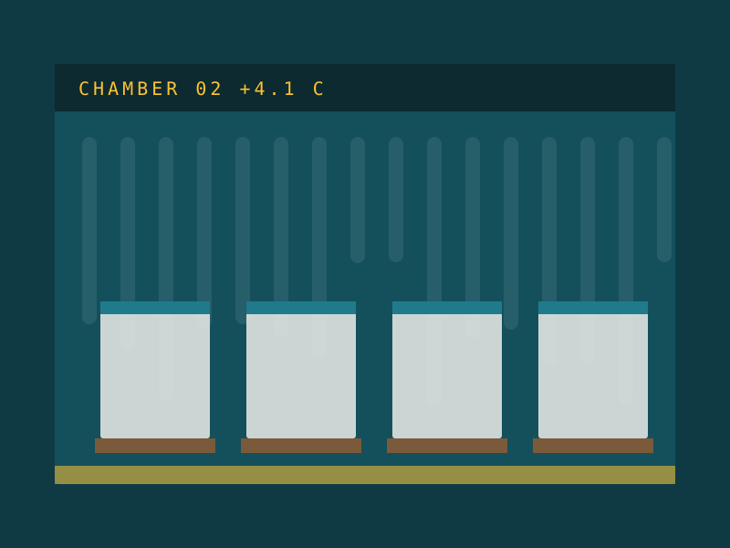
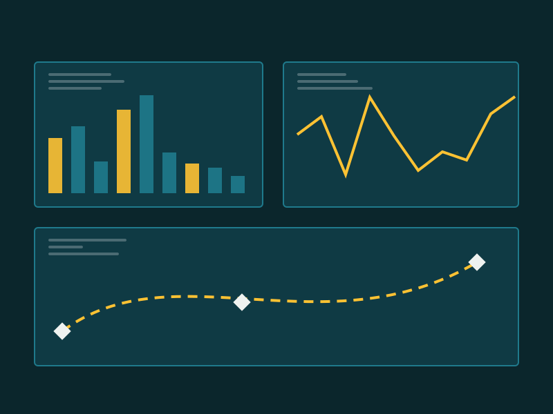

Road freightLine-haul and palletised
Nightly runs between capital cities, with tail-lift and forklift options at both ends.
Port Botany, NSW · est. 2016
Anchorline Logistics moves palletised, refrigerated and containerised freight across Australia. We handle the forwarding, the warehouse, the paperwork and the final doorstep, and we show you exactly where the load is at every step.

By the numbers
What we move
Every job runs through the same dispatch desk, so a container that lands at Port Botany on Monday can be on a pallet in Dandenong by Wednesday without changing providers.

Road freightNightly runs between capital cities, with tail-lift and forklift options at both ends.

WarehousingRacked, bonded and bulk storage with pick, pack and cycle counting on your stock file.

Cold chainTwo to eight degrees or minus eighteen, logged end to end and audited against every leg.
How a consignment moves
Each scan writes to the same record, which is what you read on the tracking page. Nothing is retyped, so nothing goes missing between systems.

We switched three suppliers for one. The part that actually changed our week was being able to answer a customer without ringing anyone.
Our chilled runs used to be a guess. Now every leg has a temperature log attached to it, which is what our auditor wanted all along.
Send us the route, the pallet count and the service level. Quotes come back the same business day.